HERBÁCEAS
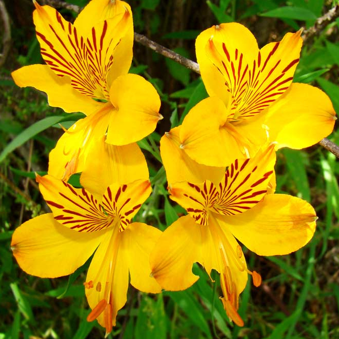
Amancay
Alstroemeria aurea
| Amancay | |
|---|---|
| medidas | Alto: 1 m - Diámetro: 0.2 m |
| riego | Medio |
| apto maceta | Si |
| exposición | Sol / Media sombra |
| duración | Perenne |
| colores de floración | Amarillo |
| perfume | No |
| propagación | Semillas y división de rizomas |
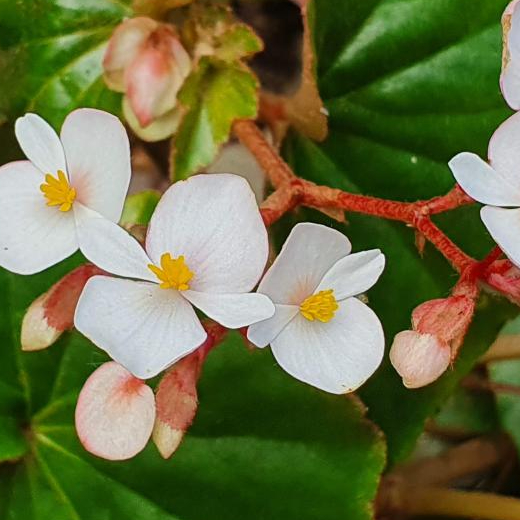
Flor de Nácar
Begonia cucullata
| Flor de Nácar | |
|---|---|
| medidas | Alto: 1 m - Diámetro: 0.5 m |
| riego | Medio |
| apto maceta | Si |
| exposición | Sol / Media sombra |
| duración | Semicaduco |
| colores de floración | Rosa |
| perfume | No |
| propagación | Semillas y división de matas |

Margarita Fucsia
Senecio pulcher
| Margarita Fucsia | |
|---|---|
| medidas | Alto: 0,6 m - Diámetro: 0.3 m |
| riego | Escaso |
| apto maceta | Si |
| exposición | Sol |
| duración | Persistente |
| colores de floración | fucsia |
| perfume | No |
| propagación | Semillas |
ARBUSTOS
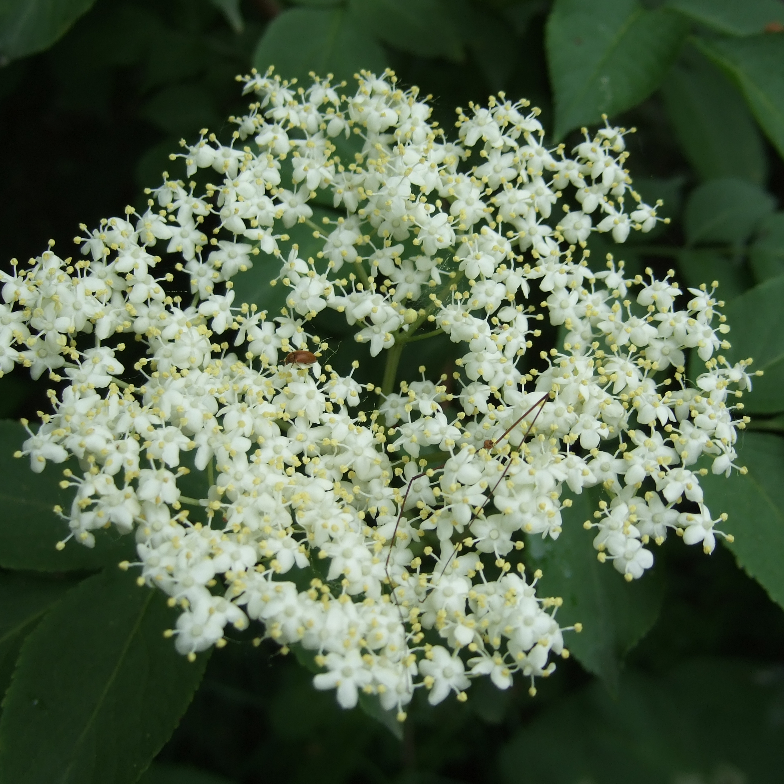
Sauco
Sambucus australis
| Sauco | |
|---|---|
| medidas | Alto: 4 m - Diámetro: 3 m |
| riego | Escaso |
| apto maceta | Si |
| exposición | Sombra / Media sombra |
| duración | Semicaduco |
| colores de floración | blanco |
| perfume | si |
| propagación | Semillas y gajos |
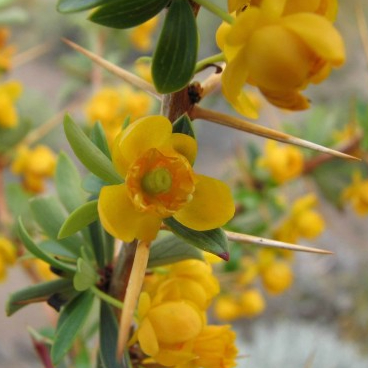
Calafate
Berberis microphylla
| Calafate | |
|---|---|
| medidas | Alto: 4 m - Diámetro: 4 m |
| riego | Medio |
| apto maceta | no |
| exposición | Sol / Media sombra |
| duración | Perenne |
| colores de floración | amarillo |
| perfume | no |
| propagación | Semillas |
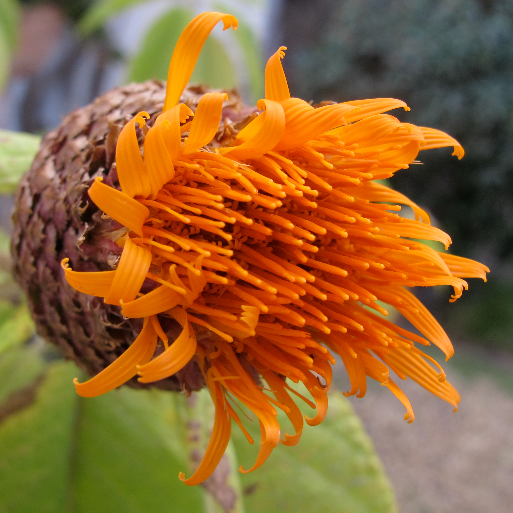
Azafrán
Cnicothamnus lorentzii
| Azafrán | |
|---|---|
| medidas | Alto: 5 m - Diámetro: 4 m |
| riego | Medio |
| apto maceta | no |
| exposición | Sol / Media sombra |
| duración | Semicaduco |
| colores de floración | naranja |
| perfume | no |
| propagación | Semillas y gajos |
TREPADORAS
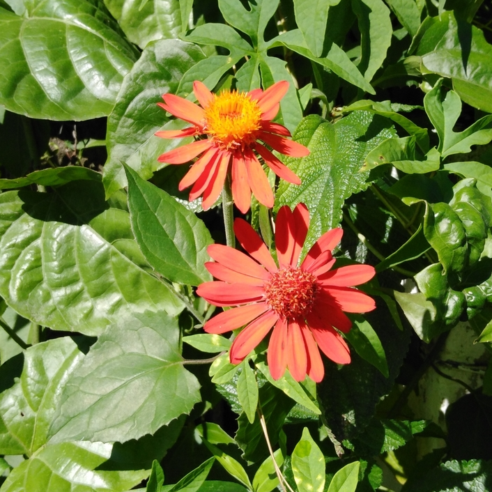
Virreina
Pseudogynoxys benthamii
| Virreina | |
|---|---|
| medidas | Alto: 4 m - Diámetro: 2 m |
| riego | Medio |
| apto maceta | si |
| exposición | Sombra / Media sombra |
| duración | Semicaduco |
| colores de floración | naranja |
| perfume | no |
| propagación | Semillas y gajos |
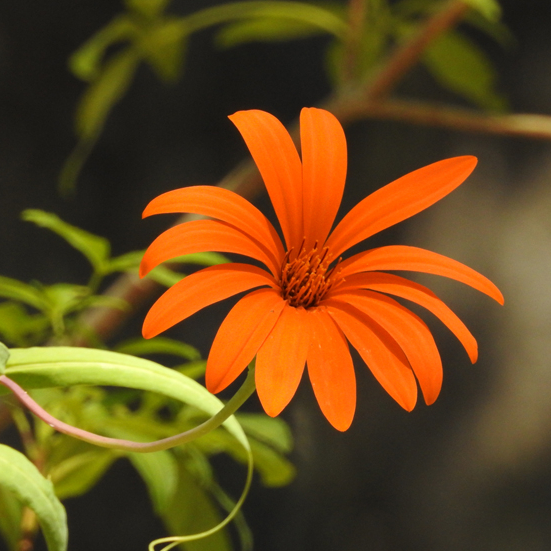
Mutisia
Mutisia decurrens
| Mutisia | |
|---|---|
| medidas | Alto: 2 m - Diámetro: 0.3 m |
| riego | Medio |
| apto maceta | si |
| exposición | Sol |
| duración | caduco |
| colores de floración | naranja |
| perfume | no |
| propagación | Semillas y gajos |
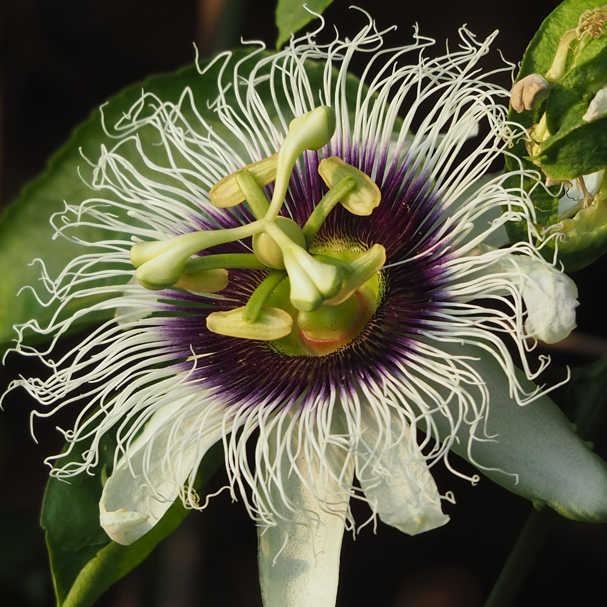
Maracuyá
Passiflora edulis
| Maracuyá | |
|---|---|
| medidas | Alto: 5 m - Diámetro: 0.3 m |
| riego | Escaso |
| apto maceta | si |
| exposición | Sol / media sombra |
| duración | semicaduco |
| colores de floración | blanco |
| perfume | no |
| propagación | Semillas |
CÁCTUS Y SUCULENTAS
.jpg)
Flor de seda
Calliandra parvifolia
| Flor de seda | |
|---|---|
| medidas | Alto: 0.15 m - Diámetro: 0.2 m |
| riego | Escaso |
| apto maceta | si |
| exposición | Sol |
| duración | perenne |
| colores de floración | fucsia |
| perfume | no |
| propagación | Semillas o Hijuelos |
.jpeg)
Flor de un día
Portulaca grandiflora
| Flor de un dia | |
|---|---|
| medidas | Alto: 0.2 m - Diámetro: 0.2 m |
| riego | Escaso |
| apto maceta | si |
| exposición | Sol |
| duración | caduco |
| colores de floración | fucsia |
| perfume | no |
| propagación | Semillas |
.jpg)
Tuna
Opuntia elata
| Tuna | |
|---|---|
| medidas | Alto: 2 m - Diámetro: 1.5 m |
| riego | Escaso |
| apto maceta | si |
| exposición | Sol |
| duración | persistente |
| colores de floración | naranja |
| perfume | no |
| propagación | Semillas o Hijuelos |
ÁRBOLES
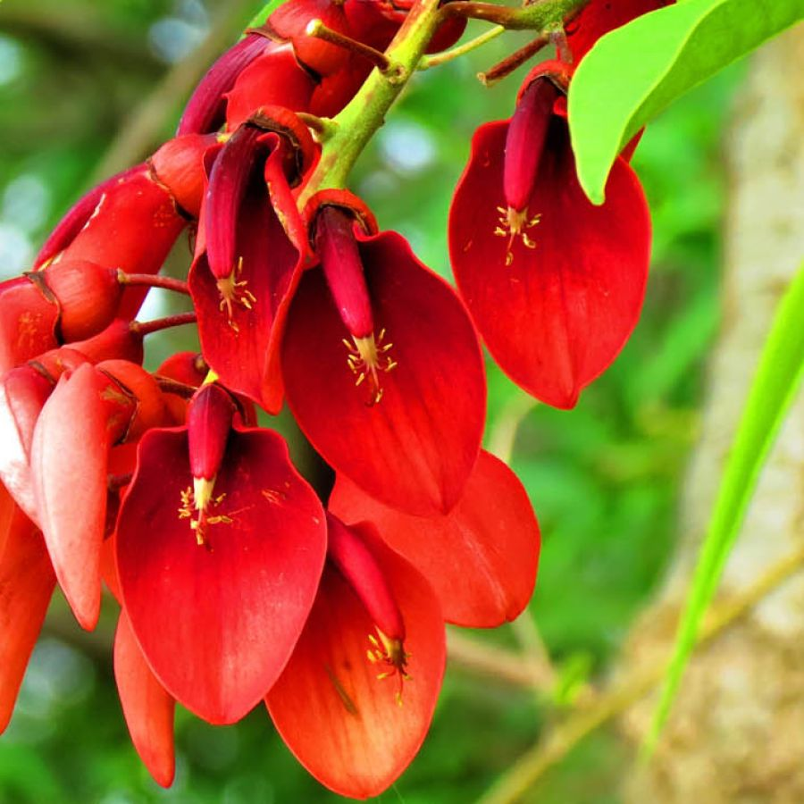
Ceibo
Erythrina crista-galli
| ceibo | |
|---|---|
| medidas | Alto: 8 m - Diámetro: 3 m |
| riego | medio |
| apto maceta | si |
| exposición | Sombra / media sombra |
| duración | caduco |
| colores de floración | rojo |
| perfume | no |
| propagación | Semillas |
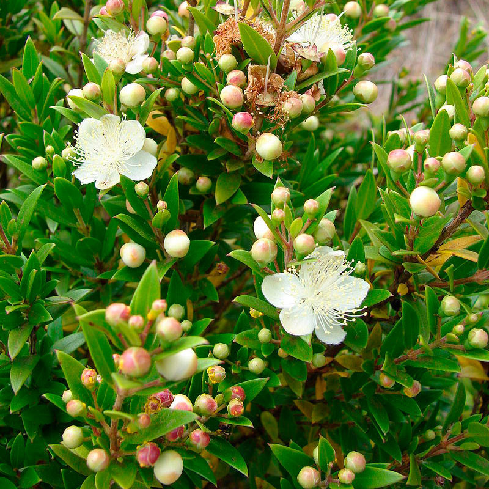
Arrayán
Luma apiculata
| Arrayán | |
|---|---|
| medidas | Alto: 12 m - Diámetro: 4 m |
| riego | abundante |
| apto maceta | no |
| exposición | Sombra / Media sombra / Sol |
| duración | Perenne |
| colores de floración | blanco |
| perfume | si |
| propagación | Semillas |
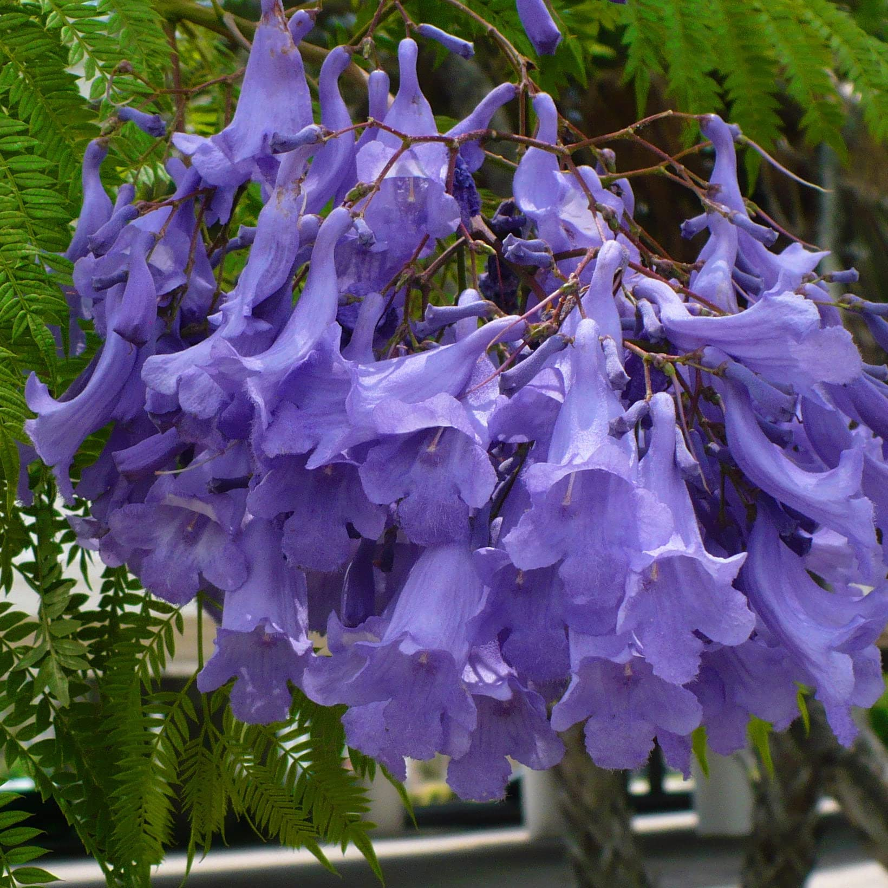
Jacarandá
Jacaranda mimosifolia
| Jacarandá | |
|---|---|
| medidas | Alto: 15 m - Diámetro: 6 m |
| riego | medio |
| apto maceta | no |
| exposición | Sol / Media sombra |
| duración | Caduco |
| colores de floración | Violeta / Lila |
| perfume | no |
| propagación | Semillas |